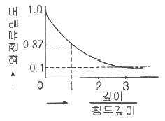
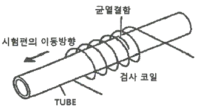
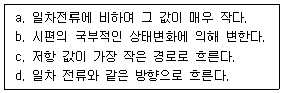
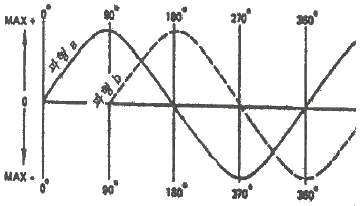

와전류비파괴검사기사 (2021-05-15 기출문제)
1과목: 비파괴검사 개론
1. 다음 중 가장 깊은 내부 결함 검사에 유리한 비파괴검사방법은?
- 침투비파괴검사
- 누설비파괴검사
- 초음파비파괴검사
- 와전류비파괴검사
(정답률: 91%)

2. 다음 재질 중 일반적으로 침투탐상시험이 어려운 것은?
- 다공성의 세라믹
- 티타늄
- 고합금강
- 주철재료
(정답률: 알수없음)
3. 압력용기 내에 있는 이상기체에 2배의 압력을 가하면, 이 이상기체의 부피는 몇 배가 되는가? (단, 온도는 일정하다.)
- /2
- 1
- 2
- 4
(정답률: 알수없음)
4. 일반적으로 검사 후 내부 결함의 크기 및 형상을 장기적으로 보전하기 적합하여 많이 사용되는 비파괴검사법은?
- 누설시험
- 자분탐상시험
- 방사선투과시험
- 침투탐상시험
(정답률: 알수없음)
5. 다음 중 물질의 손상량 평가법으로 비파괴검사방법은?
- 레프리카법
- 충격시험법
- 크리프시험법
- 피로시험법
(정답률: 60%)
6. 경질 합금의 소결 고온압착법(Hot Press Method)에 대한 설명으로 틀린 것은?
- 완성치수와 가까운 형상의 것을 얻을 수 있다.
- 로 내에서 1개씩 소결되므로 다량 생산방식을 사용하기 어렵다.
- 소결온도와 압력을 잘못 조절하면 액상이 주위에 배어 나와 편석을 일으킨다.
- 조직이 조대하고 경도는 향상되며, 상온에서 압착한 소결체보다 표면조도가 낮다.
(정답률: 알수없음)
7. 다음 중 로크웰 경도시험에서 스케일에 따른 누르개 형태 및 총 시험하중이 바르게 연결된 것은?
- A scale – 다이아몬드 원추형 - 588.4 N
- B scale – 1.588mm 강구 - 1471 N
- C scale – 다이아몬드 원추형 - 980.7 N
- K scale – 다이아몬드 원추형 - 1471 N
(정답률: 알수없음)
8. 78.5%Ni-Fe 합금으로 우수한 고투자율성을 나타내는 합금은?
- 인바(Inbar)
- 엘린바(Elinvar)
- 퍼멀로이(Permalloy)
- 니칼로이(Nicalloy)
(정답률: 30%)
9. 순철의 자기변태와 동소변태에 대한 설명으로 옳은 것은?
- 동소변태점은 660℃ 이다.
- 자기변태점은 768℃ 이다.
- 자기변태는 결정격자가 변하는 변태이다.
- 동소변태란 결정격자가 변하지 않는 변태이다.
(정답률: 알수없음)
10. 표점거리 100mm인 인장시험편의 연신율이 20%였을 때, 인장시험 후 늘어난 표점거리의 길이는 몇 mm 인가?
- 0.2
- 2
- 20
- 200
(정답률: 60%)
11. Cu-Zn 합금 중 조직이 α+β로 구성되며, 상온에서의 전연성은 낮으나 강도가 큰 것은?
- 90 Cu-10 Zn 합금
- 80 Cu-20 Zn 합금
- 70 Cu-30 Zn 합금
- 60 Cu-40 Zn 합금
(정답률: 알수없음)
12. 알류미늄 및 그 합금의 질별 기호에 대한 설명으로 틀린 것은?
- T1 : 고온 가공에서 냉각 후 자연 시효시킨 것
- T4 : 용체화처리 후 자연 시효시킨 것
- T5 : 고온 가공에서 냉각 후 인공 시효 경화 처리한 것
- T7 : 용체화 처리 후 인공 시효 경화 처리한 것
(정답률: 80%)
13. Fe-Fe3C 상태도에서 α-Fe와 Fe3C가 층상 형태로 구성되어 있는 조직은?
- 베이나이트
- 펄라이트
- 트루스타이트
- 마텐자이트
(정답률: 60%)
14. 지르코늄의 특성에 대한 설명으로 옳은 것은?
- 비중이 6.5, 융점이 1852℃ 이며, 내식성이 우수하다.
- 비중이 9.0, 융점이 1083℃ 이며, 전기저항이 작다.
- 비중이 1.7, 융점이 435℃ 이며, 가공성이 양호하다.
- 비중이 7.1, 융점이 420℃ 이며, 경도가 높다.
(정답률: 알수없음)
15. 강의 변태에서 CCT 곡선에 대한 설명으로 옳은 것은?
- 연속냉각변태 곡선이다.
- TTT 곡선과 같은 곡선이다.
- CAC 곡선과 같은 곡선이다.
- 마텐자이트 생성에만 관계되는 곡선이다.
(정답률: 알수없음)
16. 용접 후 변형을 교정하기 위한 방법이 아닌 것은?
- 피닝법
- 역변형법
- 형재에 대한 직선 수축법
- 얇은 판에 대한 점 수축법
(정답률: 64%)
17. 피복 아크 용접법에 사용되는 피복제 성분 중 아크 안정의 기능을 가지는 것은?
- 페로크롬
- 페로망간
- 산화니켈
- 규산칼륨
(정답률: 알수없음)
18. 알루미늄 합금을 용접할 때 이용하는 용접방법으로 가장 적합한 것은?
- 피복 아크 용접
- 탄산가스 아크 용접
- 서브머지드 아크 용접
- 불활성 가스 아크 용접
(정답률: 알수없음)
19. 용접결함 중 구조상의 결함에 속하는 것은?
- 변형
- 융합 불량
- 형상 불량
- 내식성 불량
(정답률: 알수없음)
20. 10분의 용접작업 중 6분 동안 아크를 발생시키고, 4분 동안 아크를 발생시키지 않고 쉬었다면, 이 용접기의 사용율은?
- 20%
- 40%
- 60%
- 100%
(정답률: 알수없음)
2과목: 와전류탐상검사 원리
21. 와전류 탐상시험에서 시험편 표면위에 표면코일을 사용할 때 코일과 시험편간의 거리에 따른 출력지시의 변화가 나타나는 현상을 무엇이라 하는가?
- 리프트-오프 효과
- 충진 효과
- 모서리 효과
- 끝부분 효과
(정답률: 알수없음)
22. 와전류탐성 시험장치에 대한 검교정이 불필요한 경우는?
- 제조공정의 시작 시점
- 제조공정의 종료 시점
- 제조공정의 개별 품목마다
- 장비의 기능에 이상 발생 시
(정답률: 알수없음)
23. 강자성체의 투자율을 옳게 설명한 것은?
- 물질이 정해지면 일정한 값을 갖는다.
- 자성체의 경우 1~1000의 값을 갖는다.
- 물질이 정해져도 자화조건에 따라 변화한다.
- 자기포화된 뒤에도 크게 변화한다.
(정답률: 알수없음)
24. 다음 그래프에서 시험체 표준침투깊이의 3배 되는 곳에서의 와전류밀도는 표면에서의 밀도의 약 얼마인가?

- 0.1 이하
- 1/3
- 0.5
- 3배 이상
(정답률: 알수없음)
25. 다음 중 와전류탐상시험에서 관통형 시험코일로서 가장 어려운 적용대상은?
- 외경이 0.5인치인 관
- 0.2인치 직경의 선
- 직경 1인치 환봉
- 일정한 크기의 판
(정답률: 알수없음)
26. 그림과 같은 관형태 시험체의 표면에 원주방향의 균열결함이 있다면 탐상기에서 어떻게 나타나는가?

- 100% 홀 결함신호와 동일한 위상으로 큰 신호 발생
- 90도 방향으로 큰 신호 발생
- 수평 방향으로 매우 작은 신호 발생
- 수평 방향으로 큰 신호 발생
(정답률: 알수없음)
27. 다음 보기 중 시편에 유도된 와전류의 특성들로 짝지어진 것은?

- a, b, c, d
- b, c, d
- a, b, d
- a, b, c
(정답률: 알수없음)
28. 와전류 탐상시험에서 이론적인 최대 검사속도를 결정하는 인자는?
- 자속밀도
- 이송장치 속도
- 검사 주파수
- 시험 코일 임피던스
(정답률: 80%)
29. 와전류 탐상코일의 임피던스 변화를 일으키는 요인은?
- 유도 리액턴스(XL)와 저항(R)의 비율변화
- 장비 감도의 변화
- 와전류 신호의 위상 변화
- 와전류 신호의 진폭 변화
(정답률: 알수없음)
30. 적은 양의 와전류 흐름의 변화를 감지하기 위하여 검사장비는 어떤 특성 장치를 가지는가?
- 고감도의 필럭스 계수기를 장착
- 저주파수 필터를 장착
- DC 자기포화 기술을 적용
- 브리지회로를 적용
(정답률: 64%)
31. 리액턴스 시험법에는 오실레이터가 회로에 추가된다. 이때 오실레이터의 사용 주파수와 연관된 시험용 코일의 특성 요소는?
- 임피던스
- 유도성 리액턴스
- 저항
- 신호 대 잡음비율(SN비)
(정답률: 알수없음)
32. 그림에서 파형 a와 b의 위상차이는 몇 도인가?

- 90°
- 180°
- 45°
- 360°
(정답률: 100%)
33. 와전류탐상시험에서 신호대 잡음의 비율을 개선하는 방법이 아니 것은?
- 잡음을 감소시키는 방향으로 시험주파수를 변화시킨다.
- 시험체에 약간의 기계적 진동을 가한다.
- 충전율(fill-factor)을 개선한다.
- 장비에 필터회로를 부가한다.
(정답률: 알수없음)
34. 비자성 금속판상의 비전도성 피막의 두께를 측정할 때의 탐상코일은 어느 것에 속하는가?
- 상호유도형 관통코일
- 내삽형 차동코일
- 자기비교형 포용코일
- 평면형 코일
(정답률: 70%)
35. 다음 중 코일의 임피던스 단위는?
- 오옴(ohm)
- % IACS
- 헨리(Henry)
- 웨버(Weber)
(정답률: 알수없음)
36. 전도율 σ, 투자율 μ인 도체에 교류전류가 흐를 때 표피 효과의 설명으로 틀린 것은?
- 주파수가 높을수록 작다.
- μ가 클수록 작다.
- σ가 클수록 크다.
- σ와 μ가 곱이 클수록 작다.
(정답률: 알수없음)
37. 내삽형 코일을 사용하여 배관을 시험하고 있을 때 대부분의 와전류 흐름은 다음 어느 부류에 속하는가?
- 배관내 방사모양의 흐름
- 배관 아래로 향하는 긴 직선모양의 흐름
- 배관의 내경을 둥글게 선회하는 모양의 흐름
- 배관의 외경만을 둥글게 선회하는 모양의 흐름
(정답률: 90%)
38. 자기비교 차동코일을 사용하여 튜브를 검사할 경우 가장 탐지하기 쉬운 것은?
- 짧은 결함
- 직경의 점진적 변화
- 전기 전도도의 점진적 변화
- 온도 변화
(정답률: 알수없음)
39. 경도와 보자력의 상관관계를 이용한 와전류탐상시험법은?
- 경화층부의 깊이 측정
- 전도성 피막두께 측정
- 비전도성 피막두께 측정
- 강재의 잔류응력 측정
(정답률: 알수없음)
40. 와전류탐상시험으로 표면 하부에 있는 결함을 검출하고자 한다. 사용주파수를 어떻게 하면 잘 검출할 수 있는가? (단, 한계주파수는 변화하지 않는다.)
- 증가시킨다.
- 감소시킨다.
- 무관하다.
- 증가와 감소를 반복시킨다.
(정답률: 알수없음)
3과목: 와전류탐상검사 시험
41. 와전류탐상시험의 변조분석법에서 시험물이 코일을 통해 일정한 속도로 이동하는데 보통 어느 정도의 속도로 이동해야 하는가?
- 4~30[피트/분]
- 3~15[피트/분]
- 40~300[피트/분]
- 300~150[피트/분]
(정답률: 알수없음)
42. 관의 외면에 발생한 작은 결함을 내삽형 보빈프로브로 검사 시 검사주파수에 따라 신호의 위상변화는 어떤 특성을 보이는가?
- 주파수 증가에 따라 시계 방향으로 회전
- 주파수 증가에 따라 반시계 방향으로 회전
- 작은 결함이므로 주파수를 바꾸어도 위상각이 변하지 않음
- 주파수 증가에 대하여 위상각은 변하지 않고 진폭만 증가함
(정답률: 알수없음)
43. 와전류탐상시험법에 의한 도막 두께측정에 있어서 피막의 소재와 모재 금속과의 전자기적 차이가 작아 측정할 수 없는 재료의 조합으로 된 것은?
- 자성 금속상의 비자성 금속막
- 자성 금속상의 비전도성 피막
- 비자성 금속상의 비자성 금속막
- 비자성 금속상의 비전도성 피막
(정답률: 73%)
44. 포본율을 30points/인치를 유지한 디지털검사시스템을 이용한 검사에서 탐촉자의 주사 속도를 25인치/sec 로 하려면 장비의 계수화율은 약 얼마로 설정해야 하는가?
- 550 samples/sec
- 750 samples/sec
- 1500 samples/sec
- 3000 samples/sec
(정답률: 70%)
45. 와전류탐상검사 시험코일 선정 시 고려할 사항으로 틀린 것은?
- 시험품과 검출할 결함을 고려한다.
- 시험코일의 적합여부는 대비시험편으로 확인한다.
- 가능한 작은 충전율을 갖는 코일을 사용한다.
- 장치에 적합한 전기적 특성을 가져야 한다.
(정답률: 알수없음)
46. 자기포화방식의 와전류탐상시험에서 탈자를 행하여야 하는 경우는?
- 전자식(電磁式)을 이요한 정밀가공을 할 때
- 시험부분이 마찰부위일 때
- 재시험을 행할 때
- 전자식 연마를 할 때
(정답률: 알수없음)
47. 관통코일을 사용하여 강관을 와전류탐상검사 시 가장 잘 검출되는 결함은?
- 내면 줄기
- 내면손상(seam)
- 표면요철
- 내면점부식성 결함
(정답률: 알수없음)
48. 와전류탐상시험에서 가장 검출하기 쉬운 불연속은?
- 와전류와 같은 방향의 균열
- 와전류와 수직방향의 균열
- 피트
- 표면아래의 개재물
(정답률: 알수없음)
49. 표면코일법에서 조절장치를 사용하여 코일과 시험편의 표면간 거리를 일정하게 유지시키는 것은 무엇에 의한 오차를 줄이기 위한 것인가?
- 장비의 편향
- 표피효과
- Lift-off
- 모서리효과
(정답률: 100%)
50. 와전류탐성검사 시 지시의 벡터표시에서 직교한 전압성분 Vx가 3이고, Vy 가 2일 때 위상각(θ)은 약 얼마인가?
- 23.7°
- 41.8°
- 48.2°
- 56.3°
(정답률: 55%)
51. 와전류탐상검사 시 표준시험편을 결정할 경우 고려할 내용으로 틀린 것은?
- 표준시험편은 시험체와 동일한 크기 및 형상이어야 한다.
- 표준시험편은 시험체와 동일한 열처리 과정을 거친 것이라야 한다.
- 시험편이 알루미늄이라면 표준시험편은 아노다이징(anodizing)된 것이라야 한다.
- 표준시험편의 표면 상태는 시험편과 동일한 상태이어야 한다.
(정답률: 알수없음)
52. 직류 자기포화 코일을 사용하여 검사하기에 가장 유리한 제품은?
- 철강
- 황동
- 구리
- 알루미늄
(정답률: 알수없음)
53. 와전류탐상시험의 내삽형 코일을 사용하여 다음 중 어느 것을 탐상할 수 있는가?
- 판재
- 튜브
- 환봉
- 피막두께
(정답률: 알수없음)
54. 다음 검사 코일 중 평판의 작은 불연속부의 정확한 위치 측정에 가장 적합한 것은?
- 관통코일
- 내삽코일
- 표면코일
- 외삽코일
(정답률: 알수없음)
55. 와전류탐상검사 시 측정된 전기 전도도에 가장 큰 영향을 미치는 것은?
- 시험체의 두께
- 코일의 반지름
- 시편의 온도
- 시험 주파수
(정답률: 알수없음)
56. 와전류탐상검사 시 발생하는 잡음을 제거하는 방법으로 옳은 것은?
- 각종 기기의 진동에 의한 잡음은 자기포화를 이용한다.
- 시험체의 재질의 변화에 의해 발생하는 잡음은 동기 검파기를 이용한다.
- 시험체의 자기적 불균일로 인해 발생하는 잡음은 접지를 이용한다.
- 시험체와 코일의 상대위치의 변화에 의해 발생하는 잡음은 필터를 이용한다.
(정답률: 알수없음)
57. 와전류탐성검사 시 배관에서 발생하는 결함 중 넓이를 갖지 않고 미세한 점 형태로 나타나는 결함은?
- 균열
- 감육
- 점식
- 용입불량
(정답률: 알수없음)
58. 강관을 와전류탐상시험 시 불필요한 신호가 발생할 수 있는 요인이 아닌 것은?
- 치수 변동
- 프로브 흔들림
- 자기 잡음
- 자료 내 개재물
(정답률: 알수없음)
59. 팬케이크 코일이 검사체 주위를 회전하면서 검사하도록 고안된 코일을 무엇이라고 하는가?
- 보빈 코일
- 외삽형 코일
- 회전형 코일
- 갭형 코일
(정답률: 알수없음)
60. 위상분석모드를 적용한 위상분석법 중에서 CRT상에 지시의 기울기와 각도로소 불연속의 변화를 나타내는 탐상법은?
- Vector point method
- Ellipse method(타원법)
- Linear time-base method
- 변조분석법
(정답률: 70%)
4과목: 와전류탐상검사 규격
61. 강의 와류탐상 시험방법(KS D 0232)에서 대비시험편에 사용되는 인공결함의 호칭방법 중 N-1.0의 의미는?
- 흠 깊이 1.0mm인 각진 흠
- 흠 깊이가 관두께의 10%인 장방형 흠
- 구멍지름이 1.0mm인 드릴구멍
- 구멍지름이 관두께의 10%인 드릴구멍
(정답률: 알수없음)
62. 강의 와류탐상 시험방법(KS D 0232)에서 사용되는 시험코일 중 동일 시험체상의 1차권선과 2차권선에 의해 와전류가 유도되고 비교되는 시험코일의 형식 및 방식은?
- 자기유도형 자기비교방식
- 자기유도형 표준비교방식
- 상호유도형 자기비교방식
- 상호유도형 표준비교방식
(정답률: 알수없음)
63. 동 및 동합금관의 와류탐상 시험방법(KS D 0214)에 따른 대비시험편의 사용목적이 아닌 것은?
- 시험장치의 감도 측정
- 시험조건의 설정
- 시험체에 기계적 손상 방지
- 시험조건의 점검
(정답률: 알수없음)
64. 강의 와류탐상 시험방법(KS D 0232)에 따른 시험장치의 일부에 이상이 발견되었을 때 조치사항으로 맞는 것은?
- 결함부분을 거짓지시로 판단하여야 한다.
- 결함부분을 의사지시로 처리하고 다음 시험을 한다.
- 기기의 잘못된 부분을 재조정하고 연속 시험한다.
- 이상 기간 중에 시험한 시험체는 모두 재시험한다.
(정답률: 알수없음)
65. 강의 와류탐상 시험방법(KS D 0232)에서 규정하는 인공홈의 가공방법으로 틀린 것은?
- 방전가공
- 용접가공
- 부식
- 기계가공
(정답률: 알수없음)
66. 보일러 및 압력 용기에 대한 관 제품의 와전류탐상검사(ASME Sec.V Art.8)에서 비자성 금속재료에 피복된 피복두께 측정을 위해 교정 확인해야 하는 프로브는 몇 시간마다 교정 값을 확인하도록 규정하고 있는가?
- 1시간
- 2시간
- 4시간
- 8시간
(정답률: 알수없음)
67. 보일러 및 압력 용기에 대한 표준 와전류탐상검사(ASME Sec.V Art.26 SE-243)에 따른 이음매 없는 동합금관의 와전류탐상시험을 위한 전자장치는 최대 얼마의 주파수를 발진할 수 있어야 하는가?
- 10 kHz
- 125 kHz
- 250 kHz
- 500 kHz
(정답률: 알수없음)
68. 보일러 및 압력 용기에 대한 표준 와전류탐상검사(ASME Sec.V Art.26 SE-243)에 규정하고 있는 동 및 동합금관 와류탐상검사의 적용범위로 옳은 것은?
- 바깥지름 50.8mm 이하, 벽두께 0.889~3.04mm
- 바깥지름 50.8mm 이하, 벽두께 0.432~3.04mm
- 바깥지름 79.4mm 이하, 벽두께 0.889~3.04mm
- 바깥지름 79.4mm 이하, 벽두께 0.432~3.04mm
(정답률: 알수없음)
69. 보일러 및 압력 용기에 대한 관 제품의 와전류탐상검사(ASME Sec.V Art.8)에서 열교환기 관의 시험절차서에 반드시 포함되어야 할 내용과 거리가 먼 것은?
- 관 재질
- 프로브 종류 및 크기
- 관 번호 설정
- 검사 주파수
(정답률: 80%)
70. 강관의 와류 탐상 검사 방법(KS D 0251)의 탐상장치의 구성에서 생략하여도 좋은 것은?
- 탐상기
- 탐상 코일
- 자기 포화 장치
- 관 이송 장치
(정답률: 알수없음)
71. 강관의 와전류탐상검사 방법(KS D 0251)에서 인공 흠의 종류가 네모 흠이고 호칭두께의 20%인 흠의 깊이를 갖는 대비시험편의 호칭방법은?
- F-20
- D-20
- N-20
- E-20
(정답률: 90%)
72. 동 및 동합금관의 와류탐상 시험방법(KS D 0214)에서 대비결함의 신호와 동등이상의 신호가 검출된 관 중 합격될 수 없는 신호의 발생상황은?
- 교정 마크
- 상처
- 두께 변화
- 비트 절삭 흔적
(정답률: 80%)
73. 보일러 및 압력 용기에 대한 관 제품의 와전류탐상검사(ASME Sec.V Art.8)에 따른 비자성 열교환기 튜브의 와전류탐상검사 중 신호수집 시스템이 갖추어야 할 요건에 대한 설명으로 부적절한 것은?
- 검사데이터는 위상 및 진폭의 출력이 가능하여야 한다.
- 튜브의 투자율 및 재질 등의 변화에 대한 감도는 요구되지 않는다.
- 결함의 종류, 크기 및 특성에 따라 다양한 종류의 탐촉자를 적용할 수 있다.
- 다중주파수를 동시에 적용하며 결함의 검출능이 탁월하도록 검사주파수를 선정한다.
(정답률: 알수없음)
74. 강의 와류탐상 시험방법(KS D 0232)에 의한 탐상기에서 얻어진 디지털 또는 아날로그 출력을 기록하는 장치는?
- 탈자장치
- 기록장치
- 이송장치
- 자기포화장치
(정답률: 알수없음)
75. 보일러 및 압력 용기에 대한 관 제품의 와전류탐상검사(ASME Sec.V Art.8)에 의해 페라이트계 재료의 검사 시 검사할 재료와 동일한 인정 시험편이 요구될 때 이 시험편에는 적어도 1개 이상의 균열이 포함되어야 한다. 기저 금속 내 균열 깊이(mm)는 최대 얼마인가?
- 0.02
- 0.04
- 0.5
- 1
(정답률: 알수없음)
76. 강관의 와류탐상검사 방법(KS D 0251)에서 대비시험편의 인공흠의 가공방법으로 적당하지 않은 것은?
- 네모 흠은 기계 가공한다.
- 네모 흠은 관의 바깥면에 관의 원주방향으로 가공한다.
- 줄흠은 3각형 줄로 관의 원주방향으로 가공한다.
- 네모 흠은 형상이 U자형으로 가공될 수 있다.
(정답률: 알수없음)
77. 동 및 동합금관의 와류탐상 시험방법(KS D 0214)에 따른 대비시험편의 대비결함 규정요건에 해당되지 않는 것은?
- 관의 축에 직각으로 뚫린 드를구멍으로 한다.
- 드릴구멍 지름은 0.5 ~ 2.0mm 로 한다.
- 드릴 구멍의 크기는 관의 치수에 따라 정한다.
- 드릴구멍은 관의 길이 방향에 4개로 한다.
(정답률: 알수없음)
78. 강의 와류탐상 시험방법(KS D 0232)에서 시험에 관한 지정사항이 아닌 것은?
- 시험체의 표면상황
- 대비 시험편
- 함부판정의 기준
- 시험체의 규격
(정답률: 알수없음)
79. 동 및 동합금관의 와류탐상 시험방법(KS D 0214)로 검사 시 판정에 대한 설명으로 잘못된 것은?
- 대비결함의 신호와 동등이하의 검출 신호관은 합격
- 대비결함의 신호와 동등이상의 검출 신호관은 무조건 불합격
- 검출신호의 발생상황에 따라 조건부 합격 가능
- 결과의 판정에 앞서 육안검사를 병행 가능
(정답률: 알수없음)
80. 동 및 동합금관의 와류탐상 시험방법(KS D 0214)에서 대비 결함 중 드릴 구멍의 허용 오차는?
- ±0.01mm
- ±0.02mm
- ±0.03mm
- ±0.⑤mm
(정답률: 알수없음)